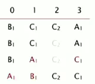

(maybe best algorithm for sorting.)
1. Quicksort
Idea:
- shuffle the array
- Partition the array into two subarrays to left and right of pivot (*now pivot is *in its final position)
no larger entry to the left of pivot
no smaller entry to the right of pivot
- sort each subarray recursively

Implemetation
The partition process:
这个方法也比较巧妙.
Use 2 pointers i and j (个人觉得用hi, lo, pivot更好...) :

→ a[i]>=a[lo], a[j]<=a[lo] (注意是大于等于/小于等于)
⇒ exchange i and j
→ Scan until i and j cross (ie. j<=i)
⇒ finally exchange lo with j
函数的签名定义的好: 把lo到hi部分的数组分成两部分, 并返回分割点的index.
private static int partition(Comparable[] a, int lo, int hi){ int i=lo+1, j=hi; while(i<j){ while( i<=hi && less(a[i],a[lo]) ) i++; //a[i]>=a[lo] while( j>=lo && less(a[lo],a[j]) ) j--; //a[j]<=a[lo] if(i<j) exch(a,i++,j--); } exch(a,lo,j); //exchange pivot with j return j; //j in its final position }
这个函数其实并不好写对:
- test for cross pointers is not trival (ex. edge case: the pivot is the smallest/largest entry in the range)
- i<=hi is necessary !
- for keys equal to a[lo]: better to stop at them
invariance:

Quicksort:
使用partition函数和辅助sort函数(recursive). 注意在整个流程开始以前先shuffle一下.
private static void sort(Comparable[] a, int lo, int hi){ if(hi<=lo) return; int pivot = partition(a, lo, hi); sort(a,lo,pivot-1); sort(a,pivot+1,hi); return; } public static void sort(Comparable[] a){ StdRandom.shuffle(a); // don't forget to shuffle the array sort(a,0,a.length-1); }
The randomness is preserved: the subarrays after partitionning is still randomly ordered.
Analysis
Performance: ~40% faster than mergesort.
Best case
compares = NlgN
(each partition will divide the array in half)
Worst case
compares = 1/2*N^2
N+(N-1)+...+1
if the array is already in order, each partition will have one subarray of length=0
Average case
proposition
On average, for array with N distinct keys, the #compares = ~2NlnN, #exchanges = ~1/2NlnN.
Proof.*
C(N) := # compares for N entries
pivot 在N个数离的排名是uniform的
接下来的数学推到很漂亮(不过可能没啥用..)


(上面最后一行写错了... 是2NlnN...orz) random shuffle: probalistic guarantee against worst case.
Pitfalls
implementations will get quadratic performance if array:
- is sorted or reverse sorted
- has many duplicates (even if randomized)
Staility
Quicksort is NOT stable.
partitionning can make long range exchanges

Practical improvements
- cutoff to insertion sort for <10 items
→ ~20% improvement
Or we can leave the small subarrays unsorted and sort them at last using insertion sort
- estimate median by sampling 3 items

→ 10% improvement
2. Selection
Goal: given un array, find the kth largest item.
- Upper bound for this problem: NlgN (just sort the array)
- for small k (ex k=1,2,3), the upper bound is N (one-pass/two-pass)
- Lower bound is N: at least have to look at everything
Quick select
Algo proposed also by Hoare:
- partition the array into two arrays left of pivot and right of pivot.
- if pivot==k: return
- continue the partition for just one of the subarrays
类似于二分查找的过程....
注意这里是不用递归的! 因为partition函数返回的直接就是pivot在整个数组里的位置!
Implementation
privater static int partition(Comparable[] a, int lo, int hi){...} public static Comparable select(Comparable[] a, int k){ StdRandom.shuffle(a); int lo=0,hi=a.length-1; while(true){ int j = partition(a,lo,hi); if(j<k) lo=j+1; if(j==k) return a[j]; else hi=j-1; if(hi<=lo) break; } return a[k];//这里不太理解为什么会在hi<lo的时候直接返回a[k] }
Analysis
Proposition
Quick selection takes linear time on average.
*proof *
intuitively, each partition will ct the subarray size in half:
N+N/2+N/4+... = 2N
formal analysis 略...
worst case: quadratic (but very rare to happen)
Theoretical results

3. Duplicate keys
if array contains many duplicate keys.
- huge array
- small number of distinct keys
for mergesort
insensitive... always ~NlgN compares.
for quicksort
Will get quadratic time if not stop on equal keys. (found in 1990s)
mistake: put all items equal to pivot *to just one side *
→ N^2 compares if all keys are equal from lo to hi.
correct: put all items equal to pivot in their final place.
3-way partitionning
(by Dijkstra)
partition the array into 3 parts:

Dijkstra's 3-way partition algo:
使用3个指针: lt指向中间部分的左边界, gt指向右边界; i指针从左向右扫描, 算法很subtle:
- lt=lo, gt=hi, i=lo
- if a[i]==v : i++
- if a[i]<v: exch(i,lt), i++, lt++
- if a[i]>v: exch(i,gt), gt--
- repeat until i and gt cross (i>gt)
invariance:
[lo, lt)all < v[lt, i)all == v(gt, hi]all >v


Implementation: 3-way quick sort
不必再写partition函数, 直接在sort递归函数里面.

private static void sort(Comparable[] a, int lo, int hi){ if(hi<=lo) return; // 递归函数别忘了先写终止条件... int lt=lo, gt = hi; Comparable v = a[lo]; for(int i=lo;i<=gt;){ //不能写 i++ if( less(a[i],v) ) exch(a, i++, lt++); else if ( less(v,a[i]) ) exch(a,i,gt--); else // v==a[i] i++; } sort(a, lo, lt-1); sort(a, gt+1, hi); }

当N个数有很多重复的时候, lower bound可以变小于NlgN:

And Sedgewick proved that the 3-wy partition is propotional to the lower bound....

4. System Sorts
Arrays.sort() in java:
import java.util.Arrays;

quicksort for primitive arrays, mergesort for objects: java设计者认为如果用obj array表示空间不是问题...
Pb in java's system sort: killer input exsit (havn't shuffle)...


总结一下学过的5/6种排序:


Comments !